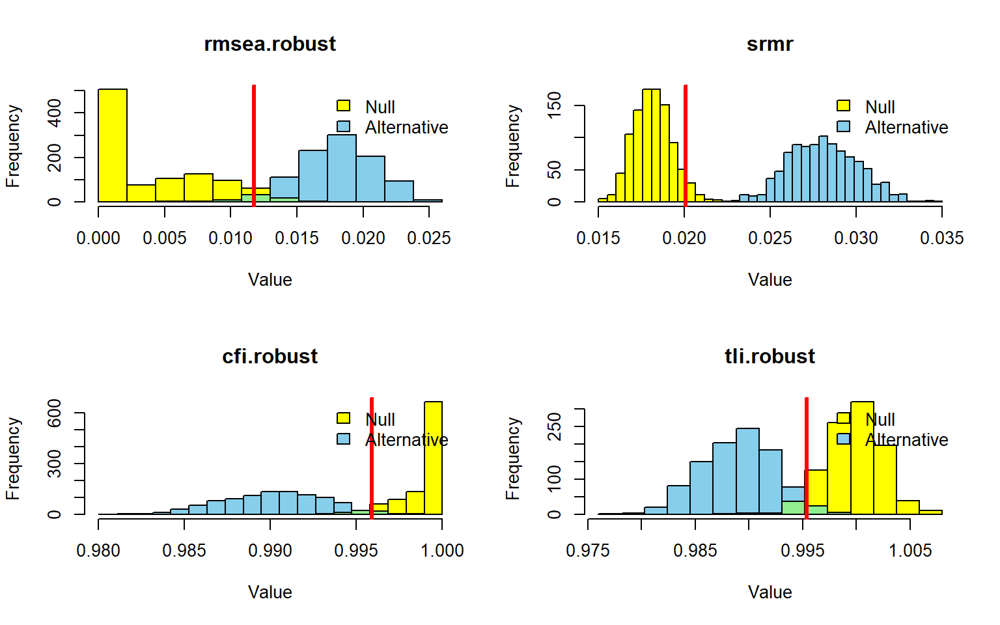
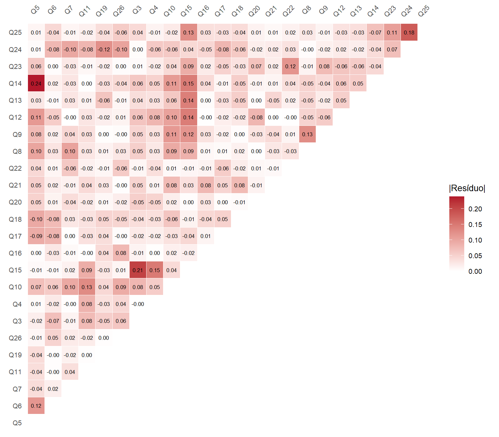

| Medida | H0 | H1 |
|---|---|---|
| N | 1243 | 1243 |
| χ² ajust. | 1354.780 | 1277.024 |
| df | 245 | 242 |
| p-valor | < 0.001 | < 0.001 |
| CFI (robusto) | 0.885 | 0.893 |
| TLI (robusto) | 0.871 | 0.878 |
| RMSEA (robusto) | 0.066 | 0.064 |
| RMSEA IC90% inf. | 0.062 | 0.061 |
| RMSEA IC90% sup. | 0.069 | 0.067 |
| p (RMSEA ≤ 0,05) | < 0.001 | < 0.001 |
| SRMR | 0.051 | 0.049 |
7 Ajuste do modelo
7.1 Ajuste global dos modelos originais
O ajuste global avalia em que medida as relações especificadas reproduzem a estrutura de covariâncias dos indicadores. Conforme a Seção 2.5, sua avaliação combina o teste de ajuste exato e índices que descrevem a magnitude do desajuste.
A Tabela 7.1 apresenta os resultados de H0 e H1 para os mesmos 1.243 participantes. O χ² e seu valor de p correspondem ao teste ajustado; CFI, TLI e RMSEA são apresentados nas versões robustas, incluindo os limites robustos do intervalo do RMSEA. O SRMR acompanha essas medidas como resumo adicional. A leitura conjunta dos indicadores orienta a avaliação das especificações originais (Mai et al., 2021; Niemand & Mai, 2018).
NotaRacional da Tabela 7.1
Finalidade
Reunir as medidas de ajuste global de H0 e H1 para apresentação lado a lado.
Preparação
Utilize a base Data/AnalysisData/whoqol_analysis.csv, as especificações analyzemodel e h1modelfree e a preparação geral da Seção 3.
Procedimento
O bloco lê a base e estima os dois modelos nas condições da Seção 6. A função própria table_fit(), definida em helpers.R, recebe cada ajuste e prepara suas medidas de ajuste. Sua auxiliar tidy_fit() organiza os índices compatíveis com o teste utilizado, preservando os valores numéricos completos.
O atributo fit_data fornece as medidas completas para os valores inseridos no texto, e table_data fornece a apresentação. Após verificar se ambas as tabelas estão disponíveis, o bloco as reúne pela medida, com uma coluna para cada modelo. A exportação conserva o mesmo conteúdo exibido.
Execução e resultado
Execute o bloco para criar os ajustes, apresentar fit_global e salvar tbl-model-fit-global.csv em Output/Results/Tables. Os ajustes serão reutilizados nas saídas seguintes.
Código
# Read the analytical dataset produced during preprocessing.
analysis_data <- readr::read_csv2(
here::here("Data", "AnalysisData", "whoqol_analysis.csv"),
na = c("", "NA"), show_col_types = FALSE
)
# Recreate the H0 fit using the same settings as in Section 6.
fit_analyzemodel <- lavaan::cfa(
model = analyzemodel, data = analysis_data, estimator = "MLR",
missing = "fiml", std.lv = TRUE
)
# Recreate the H1 fit using the same settings as in Section 6.
fit_h1modelfree <- lavaan::cfa(
model = h1modelfree, data = analysis_data, estimator = "MLR",
missing = "fiml", std.lv = TRUE
)
# Prepare each model's formatted fit summary.
fit_table_h0 <- table_fit(fit_analyzemodel, lang = "pt")
fit_table_h1 <- table_fit(fit_h1modelfree, lang = "pt")
# Preserve full-precision measures for the values inserted in the text.
fit_data_h0 <- attr(fit_table_h0, "fit_data")
fit_data_h1 <- attr(fit_table_h1, "fit_data")
fit_measures_h0 <- stats::setNames(fit_data_h0$estimate, fit_data_h0$measure)
fit_measures_h1 <- stats::setNames(fit_data_h1$estimate, fit_data_h1$measure)
# Validate the display data before joining and exporting the tables.
fit_display_h0 <- attr(fit_table_h0, "table_data")
fit_display_h1 <- attr(fit_table_h1, "table_data")
if (!is.data.frame(fit_display_h0) || !is.data.frame(fit_display_h1) ||
nrow(fit_display_h0) == 0L || nrow(fit_display_h1) == 0L) {
stop("table_data is missing. Reload helpers.R and rerun this chunk.")
}
# Join the displayed values by measure, preserving each model's column.
fit_global <- dplyr::full_join(
fit_display_h0,
fit_display_h1,
by = "Medida",
suffix = c("_H0", "_H1")
) |>
dplyr::rename(H0 = Valor_H0, H1 = Valor_H1)
# Export exactly the content displayed in the combined table.
readr::write_excel_csv2(
fit_global,
here::here("Output", "Results", "Tables", "tbl-model-fit-global.csv"),
na = "NA"
)
# Present both model summaries side by side.
fit_global_display <- fit_global
if (knitr::is_latex_output()) {
fit_global_display$Medida <- gsub(
"χ²", "$\\chi^2$", fit_global_display$Medida, fixed = TRUE
)
fit_global_display$Medida <- gsub(
"≤", "$\\leq$", fit_global_display$Medida, fixed = TRUE
)
}
knitr::kable(fit_global_display, format = "pipe", align = c("l", "r", "r"),
row.names = FALSE)Os resultados da Tabela 7.1 mostram limitações de ajuste nas duas especificações. O teste de ajuste exato foi significativo em H0, χ²(245) = 1354,780 (p <0,001), e em H1, χ²(242) = 1277,024 (p <0,001). No entanto, sabemos das limitações do teste χ², principalmente no que diz respeito à sensibilidade a pequenas discrepâncias (tamanho amostral) (Nye, 2022; West et al., 2023).
Os índices incrementais constituem o principal sinal de fragilidade nesta avaliação inicial. Em H0, CFI e TLI robustos foram, respectivamente, 0,885 e 0,871; em H1, foram 0,893 e 0,878. Esses valores mostram ganho limitado de ajuste em relação ao modelo de referência. O RMSEA robusto foi 0,066 (IC de 90%: 0,062–0,069) em H0 e 0,064 (IC de 90%: 0,061–0,067) em H1, indicando desajustes dentro de limites aceitáveis.
O SRMR apresentou um resultado mais favorável, com 0,051 em H0 e 0,049 em H1. A menor magnitude média dos resíduos padronizados pode coexistir com dificuldades em relações específicas, que serão examinadas no diagnóstico local. Essa diferença entre os sinais dos índices reforça a necessidade de interpretá-los conjuntamente (Mai et al., 2021; Niemand & Mai, 2018).
H1 apresenta índices descritivamente mais favoráveis, com melhora pequena em relação a H0. O conjunto dos resultados ainda oferece evidência insuficiente para sustentar a adequação das especificações originais. A avaliação por simulação examinará os índices observados à luz de referências calibradas para as condições de análise, conforme a estratégia discutida na Seção 2.5, antes de definir os encaminhamentos para os problemas locais.
7.2 Confiabilidade dos escores
A confiabilidade expressa a precisão de um escore sob determinadas condições de mensuração. O ômega é a medida principal, calculada a partir dos parâmetros fatoriais e da variância observada do escore. Essa avaliação complementa o ajuste global e depende da adequação da especificação utilizada (Cho, 2022; Flora, 2020).
A Tabela 7.2 apresenta o ômega e o GLB para os quatro domínios em H0 e H1. Em H1, o escore psicológico inclui também Q8 e Q9, e o ambiental inclui Q15, passando a oito e nove itens, respectivamente. Os demais escores mantêm sua composição. O GLB é calculado separadamente a partir da matriz observada recuperada de cada ajuste, permitindo verificar a correspondência dos resultados. Sua formulação algébrica pressupõe erros não correlacionados e pode apresentar viés amostral para cima; portanto, sua interpretação difere da confiabilidade baseada no modelo que inclui a covariância residual Q3–Q4 (Trizano-Hermosilla & Alvarado, 2016).
| Modelo | Fator | Itens | Ômega | GLB |
|---|---|---|---|---|
| H0 | psycho | 6 | 0.815 | 0.847 |
| H0 | physical | 7 | 0.770 | 0.871 |
| H0 | social | 3 | 0.712 | 0.706 |
| H0 | environment | 8 | 0.785 | 0.841 |
| H1 | psycho | 8 | 0.623 | 0.861 |
| H1 | physical | 7 | 0.706 | 0.871 |
| H1 | social | 3 | 0.712 | 0.706 |
| H1 | environment | 9 | 0.692 | 0.850 |
NotaRacional da Tabela 7.2
Finalidade
Estimar a confiabilidade dos escores de cada domínio, respeitando sua composição em H0 e H1.
Preparação
Utilize fit_analyzemodel e fit_h1modelfree, estimados no bloco da Tabela 7.1.
Procedimento
A função própria table_reliability(), de helpers.R, recebe cada ajuste e prepara a tabela de confiabilidade. Sua auxiliar tidy_reliability() identifica os itens de cada fator e calcula ômega e GLB para os respectivos escores com pesos iguais. O ômega provém de semTools::compRelSEM(); o GLB utiliza a matriz observada dos mesmos itens com psych::glb.algebraic().
A composição acompanha as cargas dos modelos, incluindo as cargas cruzadas de H1. As duas tabelas são verificadas e empilhadas, com a coluna Modelo identificando sua origem. A exportação utiliza o mesmo conteúdo apresentado.
Execução e resultado
Execute o bloco para apresentar os quatro escores de cada modelo e salvar tbl-domain-reliability.csv em Output/Results/Tables. O cálculo utiliza os ajustes disponíveis, sem nova estimação.
Código
# Prepare each model's formatted score reliability table.
reliability_table_h0 <- table_reliability(fit_analyzemodel, lang = "pt")
reliability_table_h1 <- table_reliability(fit_h1modelfree, lang = "pt")
# Validate the display data before combining and exporting the tables.
reliability_display_h0 <- attr(reliability_table_h0, "table_data")
reliability_display_h1 <- attr(reliability_table_h1, "table_data")
if (!is.data.frame(reliability_display_h0) ||
!is.data.frame(reliability_display_h1) ||
nrow(reliability_display_h0) == 0L || nrow(reliability_display_h1) == 0L) {
stop("table_data is missing. Reload helpers.R and rerun this chunk.")
}
# Stack the four factor scores of H0 first and H1 second.
reliability_domains <- dplyr::bind_rows(
H0 = reliability_display_h0,
H1 = reliability_display_h1,
.id = "Modelo"
)
# Export exactly the content displayed in the combined table.
readr::write_excel_csv2(
reliability_domains,
here::here("Output", "Results", "Tables", "tbl-domain-reliability.csv"),
na = "NA"
)
# Present the two model blocks in one table.
knitr::kable(reliability_domains, align = c("l", "l", "r", "r", "r"),
row.names = FALSE)Os quatro escores de domínio apresentaram ômega e GLB acima da referência convencional de 0,70 no modelo de interesse H0, embora alguns coeficientes tenham ficado próximos desse limite. Na comparação entre H0 e H1, a interpretação dos coeficientes deve considerar também a ampliação dos escores psicológico e ambiental, além da mudança na especificação fatorial. Esses resultados sustentam a consistência dos escores sob a especificação avaliada, mas não resolvem as limitações de ajuste global identificadas anteriormente.
7.3 Distribuições dos índices sob os modelos empíricos
A AP utilizou parâmetros populacionais definidos a partir da literatura e de pressupostos de planejamento. Após a estimação, as cargas e as correlações observadas diferiram dessas condições. A avaliação por simulação foi, portanto, parametrizada pelos ajustes empíricos, preservando a estrutura dos modelos e incorporando o tamanho amostral e as características distributivas consideradas na análise atual (Leite et al., 2023; Moshagen & Bader, 2024). Os limites do planejamento em \(N=200\) são, portanto, recalculados para os 1.243 participantes, com parâmetros estimados, distribuições marginais e padrão de ausências da amostra analítica. Essa mudança desloca a pergunta do tamanho amostral necessário para o comportamento esperado dos índices nas condições empíricas.
Os parâmetros estimados definem populações geradoras hipotéticas. Sob a primeira condição, os dados são gerados e analisados segundo H0, fornecendo a distribuição de referência dos índices quando suas restrições são satisfeitas. Sob a segunda, os dados são gerados segundo H1 e analisados por H0, permitindo avaliar a sensibilidade dos índices à omissão das três cargas cruzadas previamente consideradas. A forma desse contraste mantém continuidade com o planejamento, enquanto suas magnitudes são atualizadas pelas estimativas empíricas.
A avaliação reúne o posicionamento dos índices observados de H0 diante de sua referência e a sensibilidade dessa referência à alternativa especificada. Os cortes derivados dos quantis sob H0 correspondem à referência de ajuste exato; a condição alternativa permite examinar sua capacidade de detectar a omissão escolhida. Esse procedimento utiliza uma alternativa estrutural específica, com as três cargas cruzadas, enquanto o 3DFI apresentado na Seção 2.5 gera perturbações aleatórias na matriz de correlações, com magnitude estipulada por MAD (McNeish & Wolf, 2024). As conclusões são condicionadas aos parâmetros e às condições simuladas. As estimativas utilizadas nos geradores permanecem fixas entre replicações; a simulação reproduz a variabilidade amostral sob essas estimativas. Trata-se de uma avaliação condicional baseada na mesma amostra utilizada para estimar os parâmetros. O diagnóstico local complementará a avaliação, examinando discrepâncias que o contraste escolhido pode não representar.
Foram consideradas 1.000 replicações de 1.243 participantes em cada condição. A geração incorpora as assimetrias e curtoses marginais observadas e repete o padrão de células ausentes da base analítica. A estimação mantém MLR/FIML. A Figura 7.1 apresenta as distribuições de RMSEA, CFI e TLI robustos, acompanhados do SRMR, preservando as medidas utilizadas na Tabela 7.1. A concentração de CFI e TLI próximos de 1 é esperada sob a condição em que o modelo ajustado corresponde à estrutura geradora; essa referência permite avaliar o afastamento dos valores observados.

NotaRacional da Figura 7.1
Finalidade
Calibrar os limites dos índices com base nos modelos empíricos e comparar suas distribuições sob especificação correta e omissão das cargas cruzadas.
Preparação
Utilize analysis_data, fit_analyzemodel e fit_h1modelfree, obtidos nesta seção, além de analyzemodel, SIM, SEED, ALPHA e FITS_ROB da preparação geral. Os resultados salvos são sim_h0_empirical.rds e sim_h1_empirical.rds, em Data/IntermediateData.
Procedimento
O bloco ordena os 24 indicadores conforme cada ajuste e obtém sua assimetria e curtose excedente para construir as distribuições marginais de geração. A condição de referência gera dados a partir do ajuste H0; a alternativa gera a partir de H1. Nas duas condições, o modelo estimado é analyzemodel, que omite as três cargas cruzadas.
As chamadas solicitam 1.000 replicações, o tamanho da amostra analítica, semente 123321, MLR e identificação por variâncias unitárias. O padrão de células ausentes é fornecido em miss, e missing = "fiml" é passado à chamada. cache_or_run() reaproveita os objetos ou arquivos existentes e só simula na ausência de resultados disponíveis. As instruções operacionais de recálculo ficam no README.
A calibração utiliza a distribuição sob H0: percentil 95 para RMSEA robusto e SRMR, e percentil 5 para CFI e TLI robustos. revDirec = TRUE explicita a inversão para os nomes robustos, que não integram a lista automática do pacote. Os mesmos limites são fornecidos ao cálculo de poder na condição alternativa e ao gráfico, evitando que cada saída obtenha critérios distintos.
O bloco salva a tabela auxiliar de poder e limites com precisão completa, mantendo-a oculta na apresentação. A figura reúne os quatro índices e suas referências de rejeição.
Execução e resultado
Execute o bloco completo para disponibilizar as duas simulações, apresentar a figura e salvar tbl-empirical-power-cutoffs.csv em Output/Results/Tables. A reutilização dos arquivos evita repetir as simulações.
Código
# Keep the same 24 indicators in the order used by each fitted model.
indicators_h0 <- analysis_data[
lavaan::lavNames(fit_analyzemodel, "ov")
]
# Order the same indicators according to the H1 specification.
indicators_h1 <- analysis_data[
lavaan::lavNames(fit_h1modelfree, "ov")
]
# Use observed marginal skewness and excess kurtosis for data generation.
dist_h0 <- simsem::bindDist(
skewness = psych::skew(as.matrix(indicators_h0), na.rm = TRUE),
kurtosis = psych::kurtosi(as.matrix(indicators_h0), na.rm = TRUE)
)
# Define marginal moments for the H1 generating condition.
dist_h1 <- simsem::bindDist(
skewness = psych::skew(as.matrix(indicators_h1), na.rm = TRUE),
kurtosis = psych::kurtosi(as.matrix(indicators_h1), na.rm = TRUE)
)
# Reuse or simulate samples from H0 and fit the H0 specification.
sim_h0_empirical <- cache_or_run("sim_h0_empirical", {
simsem::sim(
nRep = SIM,
model = analyzemodel,
n = nrow(analysis_data),
generate = fit_analyzemodel,
indDist = dist_h0,
miss = simsem::miss(logical = is.na(indicators_h0)),
lavaanfun = "cfa",
estimator = "MLR",
missing = "fiml",
std.lv = TRUE,
seed = SEED,
multicore = TRUE
)
})
# Reuse or simulate samples from H1 and fit H0 without cross-loadings.
sim_h1_empirical <- cache_or_run("sim_h1_empirical", {
simsem::sim(
nRep = SIM,
model = analyzemodel,
n = nrow(analysis_data),
generate = fit_h1modelfree,
indDist = dist_h1,
miss = simsem::miss(logical = is.na(indicators_h1)),
lavaanfun = "cfa",
estimator = "MLR",
missing = "fiml",
std.lv = TRUE,
seed = SEED,
multicore = TRUE
)
})
# Calibrate the 95th percentiles for RMSEA/SRMR and 5th for robust CFI/TLI.
cutoff_fixed <- cbind(
simsem::getCutoff(
sim_h0_empirical,
alpha = ALPHA,
usedFit = c("rmsea.robust", "srmr")
),
simsem::getCutoff(
sim_h0_empirical,
alpha = ALPHA,
usedFit = c("cfi.robust", "tli.robust"),
revDirec = TRUE
)
)
# Apply those same cutoffs to the alternative distribution.
power_fixed <- c(
simsem::getPowerFit(
sim_h1_empirical,
cutoff = unlist(
cutoff_fixed[1, c("rmsea.robust", "srmr")]
),
usedFit = c("rmsea.robust", "srmr")
),
simsem::getPowerFit(
sim_h1_empirical,
cutoff = unlist(
cutoff_fixed[1, c("cfi.robust", "tli.robust")]
),
usedFit = c("cfi.robust", "tli.robust"),
revDirec = TRUE
)
)
# Combine power and cutoffs in one table.
power_cutoff_fixed <- rbind(
"Poder" = as.numeric(power_fixed),
"Ponto de corte" = as.numeric(cutoff_fixed[1, ])
)
# Format the fit-index column labels.
colnames(power_cutoff_fixed) <- toupper(names(power_fixed))
# Export the numeric results before display rounding.
write.csv2(
power_cutoff_fixed,
here::here("Output", "Results", "Tables", "tbl-empirical-power-cutoffs.csv"),
row.names = TRUE,
na = "NA"
)
# Plot the distributions of RMSEA, CFI and TLI robust and SRMR under H0 and H1.
simsem::plotPowerFit(
sim_h1_empirical,
nullObject = sim_h0_empirical,
cutoff = unlist(cutoff_fixed[1, ]),
usedFit = FITS_ROB
)A Figura 7.1 mostra separação entre as distribuições sob H0 e sob a condição em que as três cargas cruzadas estão presentes na população, mas são omitidas pelo modelo de análise. Com referência nominal de erro Tipo I de 5%, os limites superiores foram 0,012 para RMSEA e 0,020 para SRMR; os limites inferiores foram 0,996 para CFI e 0,995 para TLI. Aplicados à condição alternativa, esses cortes produziram poder de 97,4%, 100,0%, 97,5% e 97,5%, respectivamente. Os quatro índices apresentaram, portanto, elevada capacidade de detectar essa omissão nas condições simuladas.
Nos dados observados, H0 apresentou RMSEA de 0,066 e SRMR de 0,051, ambos acima dos respectivos cortes, enquanto CFI e TLI foram 0,885 e 0,871, abaixo dos limites inferiores. Os quatro indicadores situam o ajuste observado na região de rejeição da referência de ajuste exato. A capacidade de detectar a alternativa simulada não identifica a origem do desajuste observado nem demonstra que ele decorra especificamente das três cargas cruzadas. Esses resultados fundamentam a investigação local das discrepâncias e sua interpretação à luz da teoria, da magnitude dos problemas e dos precedentes bibliográficos.
7.4 Diagnóstico local
O diagnóstico local identifica relações que contribuem para as discrepâncias globais. A leitura combina os parâmetros fatoriais apresentados na Tabela 6.1, os MI, os EPC e os resíduos de correlação, conforme a Seção 2.5. A avaliação local concentra-se em H0, o modelo de análise que orientará os encaminhamentos.
7.4.1 Índices de modificação e mudanças esperadas
O MI estima a redução da estatística de ajuste ao liberar individualmente um parâmetro fixado. O EPC expressa a mudança esperada nesse parâmetro, e sua versão padronizada auxilia a avaliação da magnitude. Essas aproximações devem ser consideradas junto das cargas, dos resíduos e do significado substantivo da relação (Nye, 2022). A Tabela 7.3 reúne os vinte maiores MI de H0 e seus EPC correspondentes.
| Relação | MI | EPC | EPC padronizado |
|---|---|---|---|
| Q17 ~~ Q18 | 222.273 | 0.191 | 0.880 |
| Q5 ~~ Q14 | 121.764 | 0.153 | 0.356 |
| psycho =~ Q10 | 112.150 | 0.630 | 0.698 |
| environment =~ Q5 | 103.940 | 0.355 | 0.435 |
| Q24 ~~ Q25 | 82.774 | 0.198 | 0.278 |
| environment =~ Q15 | 74.630 | 0.266 | 0.330 |
| Q10 ~~ Q18 | 63.441 | -0.097 | -0.299 |
| Q5 ~~ Q6 | 60.280 | 0.112 | 0.244 |
| environment =~ Q10 | 58.785 | 0.222 | 0.246 |
| physical =~ Q5 | 55.927 | -0.432 | -0.528 |
| Q3 ~~ Q15 | 51.765 | 0.114 | 0.188 |
| psycho =~ Q17 | 46.666 | -0.407 | -0.442 |
| physical =~ Q19 | 46.555 | 0.425 | 0.452 |
| Q8 ~~ Q9 | 45.560 | 0.131 | 0.211 |
| physical =~ Q6 | 39.016 | -0.434 | -0.446 |
| Q11 ~~ Q10 | 37.340 | 0.093 | 0.189 |
| psycho =~ Q24 | 36.725 | -0.269 | -0.279 |
| environment =~ Q17 | 34.091 | -0.149 | -0.162 |
| environment =~ Q19 | 32.428 | -0.207 | -0.220 |
| Q10 ~~ Q17 | 31.124 | -0.064 | -0.244 |
NotaRacional da Tabela 7.3
Finalidade
Organizar as vinte maiores relações candidatas à liberação em H0, com seus MI e EPC.
Preparação
Utilize fit_analyzemodel, estimado no início desta seção.
Procedimento
A função própria table_mi(), de helpers.R, recebe o ajuste e prepara as relações em ordem decrescente de MI. Sua auxiliar tidy_mi() seleciona cargas e covariâncias entre variáveis distintas, excluindo relações já livres. A tabela mantém os operadores lavaan e apresenta MI, EPC bruto e EPC padronizado.
O atributo mi_data preserva todas as relações elegíveis com precisão completa, recuperadas em mi_all para uso no texto. table_data contém as vinte relações apresentadas. Após a verificação, esse conteúdo é exportado com os mesmos rótulos e valores de exibição.
Execução e resultado
Execute o bloco para apresentar a tabela e salvar tbl-modification-indices-top20.csv em Output/Results/Tables. O procedimento diagnostica o ajuste existente, sem estimar um modelo modificado.
Código
# Prepare the twenty largest modification indices for H0 in Portuguese.
mi_table_h0 <- table_mi(fit_analyzemodel, lang = "pt")
# Preserve all full-precision candidates for the values inserted in the text.
mi_all <- attr(mi_table_h0, "mi_data")
# Validate and export exactly the content displayed in the table.
mi_table_data_h0 <- attr(mi_table_h0, "table_data")
if (!is.data.frame(mi_table_data_h0) || nrow(mi_table_data_h0) == 0L) {
stop("table_data is missing or empty. Reload helpers.R and check the model.")
}
readr::write_excel_csv2(
mi_table_data_h0,
here::here("Output", "Results", "Tables", "tbl-modification-indices-top20.csv"),
na = "NA"
)
# Present the formatted modification index table.
mi_table_h07.4.2 Resíduos de correlação
Os resíduos de correlação mostram quanto cada associação entre indicadores é subestimada ou superestimada pelo modelo. Sua magnitude permite localizar discrepâncias que podem ficar diluídas nos índices globais (Crede & Harms, 2019; Nye, 2022).
A Figura 7.2 apresenta os resíduos de H0, com os itens na ordem do modelo de análise. A intensidade da cor representa o valor absoluto do resíduo; os números preservam o sinal. Cada par aparece uma única vez. A referência de magnitude absoluta de 0,10 discutida na Seção 2.5 orienta a inspeção conjunta com MI, EPC e conteúdo dos itens.

NotaRacional da Figura 7.2
Finalidade
Localizar diferenças entre as correlações observadas e reproduzidas por H0 em um mapa de resíduos.
Preparação
Utilize fit_analyzemodel, estimado no início desta seção, e a função plot_stdres() de helpers.R.
Procedimento
plot_stdres() recebe o ajuste e retorna um gráfico ggplot. Sua auxiliar tidy_stdres() organiza os resíduos obtidos por lavaan::lavResiduals(), utilizando as estatísticas observadas do ajuste com FIML. Os resíduos são diferenças de correlação, sem conversão em estatísticas z.
O mapa mantém a ordem dos indicadores, apresenta cada par uma vez e omite a diagonal. A cor representa a magnitude absoluta, enquanto os rótulos preservam o sinal e exibem duas casas decimais. Os atributos residual_matrix e residual_data conservam, respectivamente, a matriz completa e os pares com precisão original para exportação e valores no texto.
Execução e resultado
Execute o bloco para apresentar o mapa e salvar residual-correlations-h0.csv em Output/Results/Tables e fig-residual-correlations.png em Output/Results/Figures.
Código
# Create the correlation residual heatmap.
residual_heatmap <- plot_stdres(fit_analyzemodel)
# Preserve full-precision residuals for export and inline results.
residual_matrix_h0 <- attr(residual_heatmap, "residual_matrix")
residual_correlations <- attr(residual_heatmap, "residual_data")
# Export the complete correlation residual matrix.
write.csv2(
residual_matrix_h0,
here::here("Output", "Results", "Tables", "residual-correlations-h0.csv"),
row.names = TRUE, na = "NA"
)
# Save the residual correlation heatmap.
ggplot2::ggsave(
here::here("Output", "Results", "Figures", "fig-residual-correlations.png"),
plot = residual_heatmap, width = 8, height = 7, dpi = 300
)
# Display the residual correlation heatmap.
residual_heatmapInicialmente, o diagnóstico local de H0 pode envolver os três itens cujas cargas cruzadas foram previamente consideradas em H1. Para Q15, a carga adicional no domínio Ambiente aparece diretamente entre os maiores MI (MI = 74,630; EPC padronizado = 0,330). O item também apresenta resíduos de correlação positivos com Q3 e Q4, de aproximadamente 0,21 e 0,15, respectivamente, indicando associações subestimadas pela especificação atual. Para Q8 e Q9, destaca-se a covariância residual entre os itens (MI = 45,560; EPC padronizado = 0,211), acompanhada de um resíduo de correlação de aproximadamente 0,13. Esses resultados retomam dificuldades de representação envolvendo os itens contemplados na formulação de H1, embora a dependência residual entre Q8 e Q9 não constitua, isoladamente, evidência de suas cargas adicionais no domínio Psicológico.
O diagnóstico também evidencia dificuldades além das relações previstas em H1. Q5 participa de indicações de cargas adicionais nos domínios físico e ambiental e de dependências com Q6 e Q14. O resíduo de correlação Q5–Q14, de 0,239, constitui a maior discrepância absoluta da matriz. Q24 combina carga padronizada baixa, indicação de carga adicional no domínio psicológico e dependência com Q25, cujo resíduo de correlação é 0,181. Em conjunto com os problemas de Q15, esses resultados destacam Q5, Q15 e Q24 como candidatos à investigação de uma especificação modificada. Q8 permanece como candidato adicional, considerando sua carga baixa e a relação residual com Q9. As cargas reduzidas de Q3/Q4 e a dependência indicada entre Q17/Q18 também integram o diagnóstico, embora representem dificuldades distintas de mensuração.
A avaliação global apontou limitações nas especificações originais, e a simulação situou o ajuste observado de H0 além dos limites de sua referência de ajuste exato. A leitura conjunta das cargas, dos resíduos e dos MI/EPC localizou relações que merecem investigação substantiva. Esses achados motivam examinar modificações, cuja seleção exige avaliar o conteúdo dos itens e a cobertura dos domínios. Na Seção 8, os candidatos serão confrontados com os precedentes bibliográficos para fundamentar a nova especificação e suas condições de uso. As alterações selecionadas a partir destes dados serão apresentadas como exploração posterior; sua contribuição para o ajuste será verificada pela reestimação.